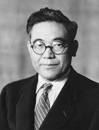
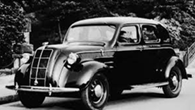
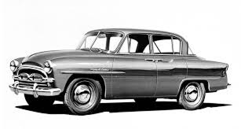

Historia de Toyota
Toyota es una de las compañías automotrices más grandes y reconocidas del mundo. Fue fundada en 1937 en Japón por Kiichiro Toyoda, hijo de Sakichi Toyoda, un inventor que había creado una exitosa empresa textil. La división automotriz nació dentro de Toyoda Automatic Loom Works, pero rápidamente se independizó bajo el nombre Toyota Motor Corporation (la “d” se cambió por una “t” por sonar mejor en japonés y porque el trazo de los caracteres era más armónico).
Kiichiro Toyoda soñaba con fabricar automóviles confiables y accesibles para los japoneses, que en aquel entonces dependían en gran parte de vehículos extranjeros. En 1936, presentó su primer prototipo, el Toyota AA, un sedán inspirado en los autos estadounidenses de la época.
El Toyota AA, lanzado en 1936, fue el primer automóvil de la marca: un sedán robusto y elegante. Poco después, la Segunda Guerra Mundial obligó a Toyota a concentrarse en la producción de camiones para el ejército japonés. Tras la guerra, Japón quedó devastado y Toyota atravesó problemas económicos, pero la empresa sobrevivió gracias al compromiso de sus trabajadores y a la mejora continua que más tarde definiría su filosofía.
Durante las décadas de 1950 y 1960, Toyota comenzó a exportar sus autos a diferentes países. En 1957, el Toyota Crown fue el primer modelo vendido en Estados Unidos. En 1966 se lanzó el Toyota Corolla, que se convertiría en uno de los autos más vendidos de la historia.